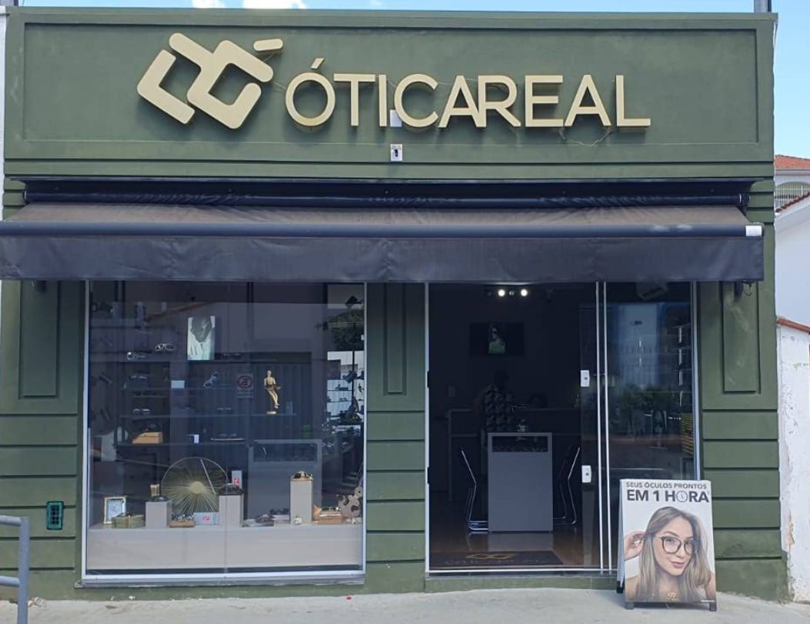
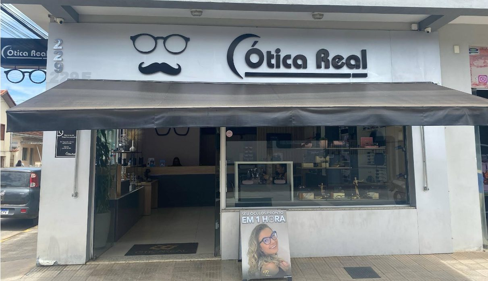
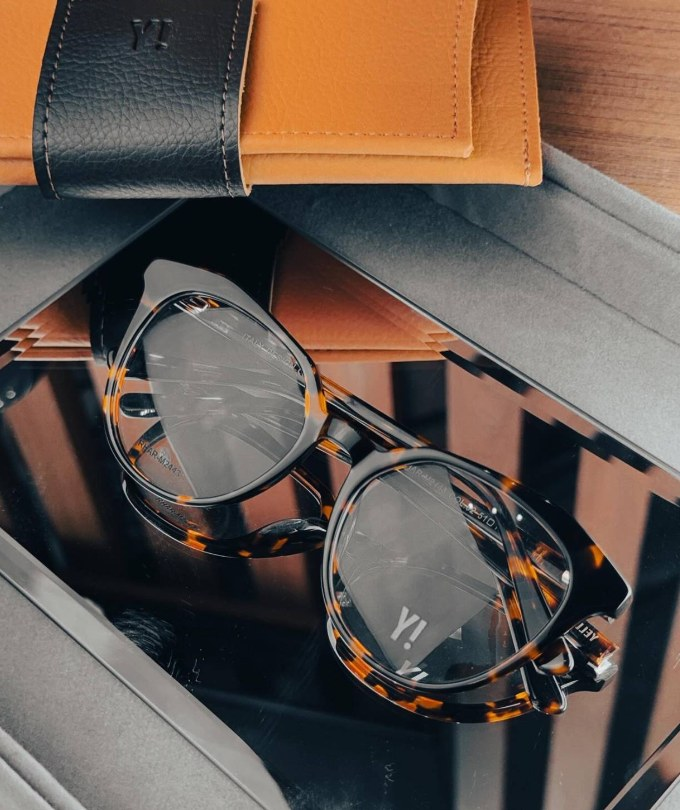
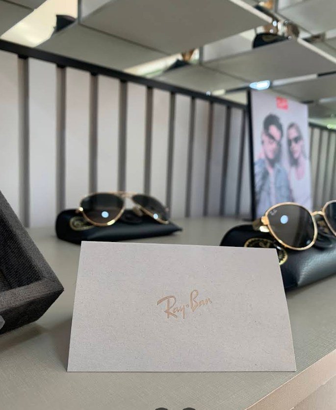
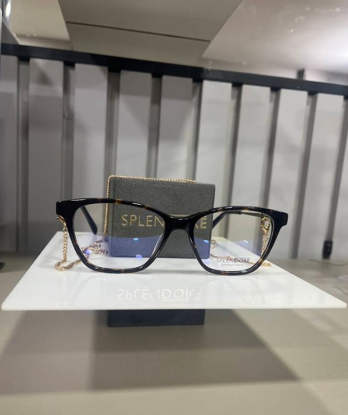
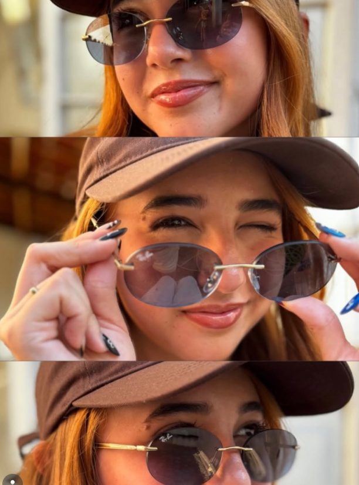
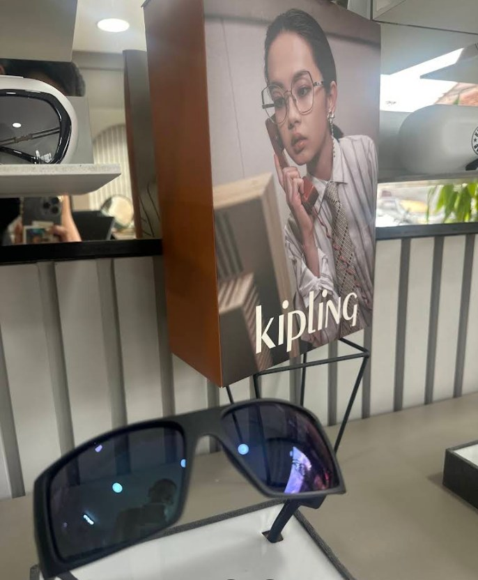
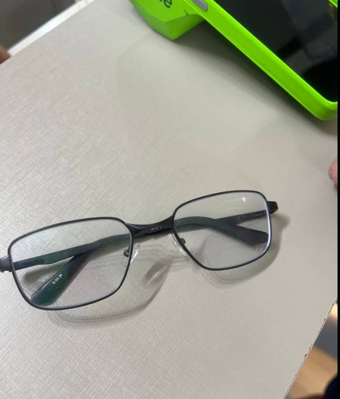

Loja 1
Ótica Real Santa Rita
R. Comendador Custódio Ribeiro, 120 A
Centro, Santa Rita do Sapucaí – MG, 37540-000
(35) 3471-0901
Santa Rita do Sapucaí · MG
Óculos de grau e de sol em duas lojas no Centro. Atendimento que os clientes elogiam e óculos pronto em 1 hora.
A Ótica
A Ótica Real atende em Santa Rita do Sapucaí com duas lojas no Centro, da mesma proprietária. Em ambas, o que mais aparece nas avaliações é o jeito de atender: atenção, simpatia e cuidado do começo ao fim.


Óculos






Avaliações no Google
“Atendimento excelente! Fui muito bem recebida, todos foram super atenciosos e prestativos.”Nicoly Pêgo · Loja 1
“Ótimo atendimento, rapidez na entrega e melhores preços.”Cliente · Loja 2
“Sempre faço óculos aqui, há mais de 20 anos! Sempre muito bom.”Mariana Junqueira · Loja 1
“Sempre gentis nos atendimentos presenciais e ágeis pelos canais online.”Renata Coutinho · Loja 2
Acompanhe no Instagram da Ótica Real os vídeos, lançamentos e promoções das duas lojas.
Lojas
Loja 1
R. Comendador Custódio Ribeiro, 120 A
Centro, Santa Rita do Sapucaí – MG, 37540-000
(35) 3471-0901
Loja 2
R. Barão do Rio Branco, 229 E
Centro, Santa Rita do Sapucaí – MG, 37540-000
(35) 3473-1297